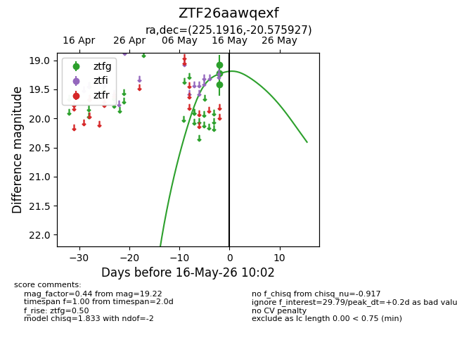
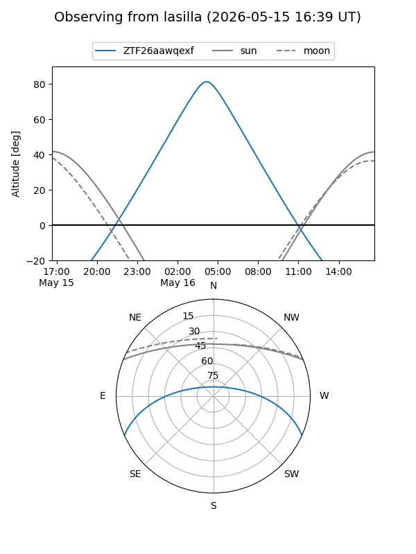
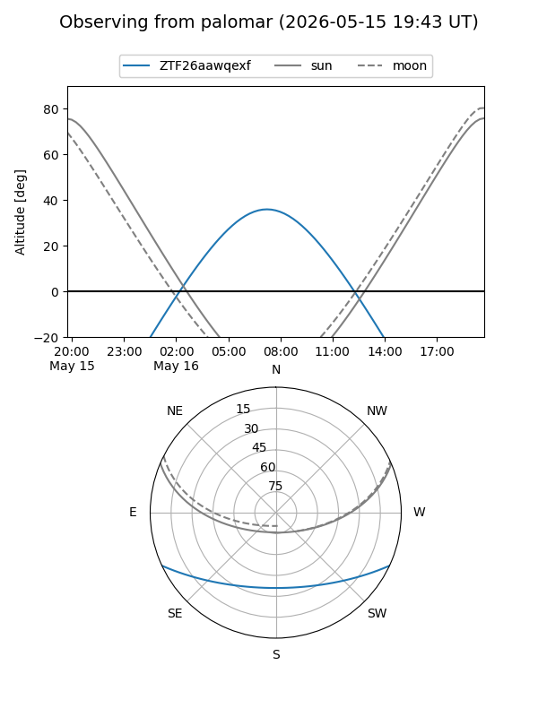

ZTF26aawqexf
Target ZTF26aawqexf at 2026-05-16 10:04
Aliases and brokers:
FINK: link
Lasair: link
ALeRCE: link
alt names
ZTF26aawqexf (ztf,fink_ztf)
Coordinates:
equatorial (ra, dec) = 225.1916,-20.57593
equatorial (HMS+DMS) = 15:00:45.99,-20:34:33.34
galactic (l, b) = (339.5608,+32.94125)
Flags:
Photometry:
last ztfg=19.22
3 ztfg detections
Lightcurve

Visibility


Additional plots